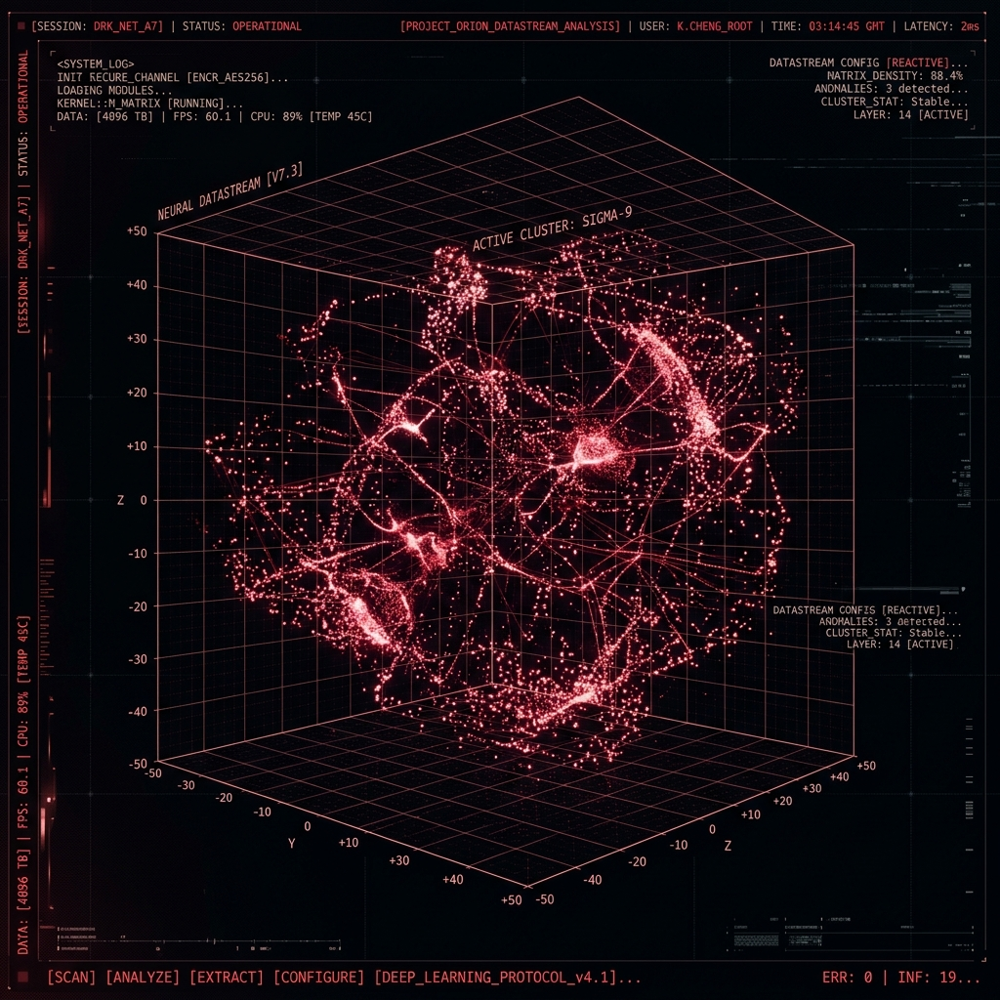

Publications
2
nature-family
journals
journals
2025
Engineering Data Science & AI — building intelligent tools for biological and multimodal data.
Since Dec 2022 · Houston
Graduate student at the University of Houston and research assistant at Houston Methodist. I build pipelines, models and interactive tools for single-cell, spatial omics and whole-slide imaging data.
Publications, curated data and campaign uplift — measured outcomes from research and industry work.
Tap a block on the timeline to see the details.
Platforms and analyses built at Houston Methodist, from gigapixel slides to single-cell clusters.
Chen W., Zhang P., Tran T. N., et al. · Nature Methods (2025) · doi:10.1038/s41592-025-02707-1
Zhang P., Chen W., Tran T. N., et al. · Nature Communications 16, 7178 (2025) · doi:10.1038/s41467-025-62593-1
Trained on my résumé, projects and publications.

I’m seeking a Data Science internship where analytical skills and programming expertise drive real decisions.